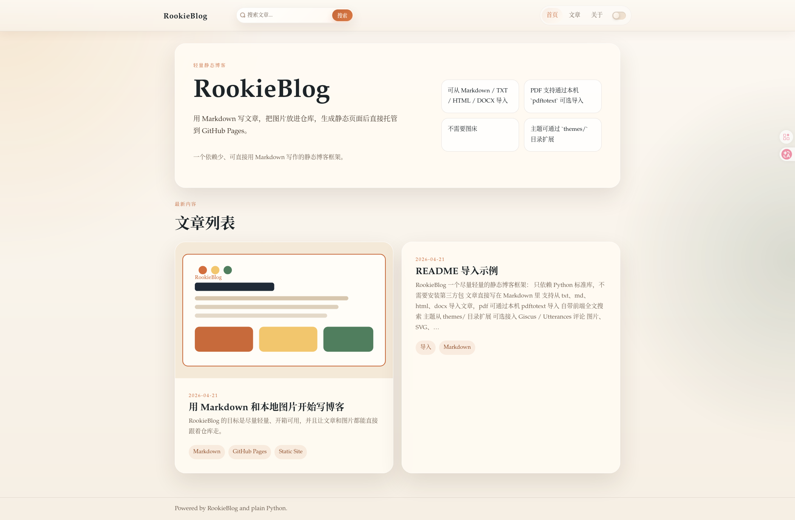
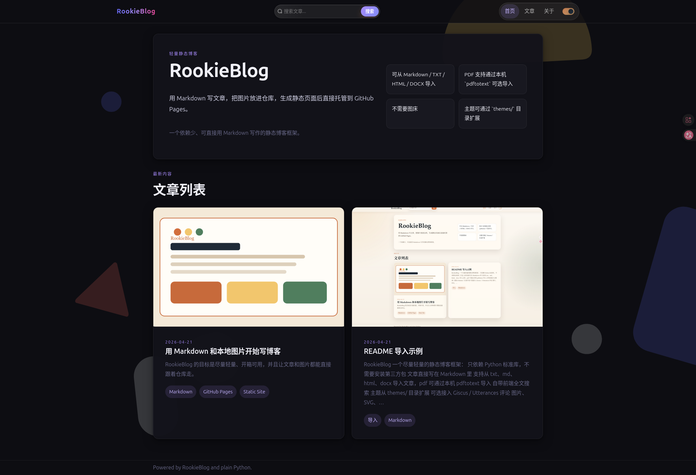

RookieBlog
一个尽量轻量的静态博客框架：
- 只依赖 Python 标准库，不需要安装第三方包
- 文章直接写在 Markdown 里
content/posts/下的文件夹会自动作为文章分类- 支持从
txt、md、html、docx导入文章，pdf可通过本机pdftotext导入 - 自带前端全文搜索
- 自带暗色模式开关
- 顶部提供独立的“文章”入口、分类页和文章阅读侧栏
- 主题从
themes/目录扩展 - 可选接入 Giscus / Utterances 评论
- 图片、SVG、附件可以直接放仓库，不需要第三方图床
- 生成静态网页，适合部署到 GitHub Pages
在线体验页面： https://wzy03dxz.github.io/RookieBlog/index.html


目录结构
RookieBlog/
├── content/
│ ├── assets/ # 图片、SVG、附件
│ ├── pages/ # 独立页面
│ └── posts/ # 博客文章，子文件夹会作为分类
├── static/ # 公共静态资源，如 favicon、额外素材
├── themes/ # 主题模板和样式
├── .github/workflows/ # GitHub Pages 自动部署
├── docs/ # 适用于 GitHub Pages /docs 来源的发布目录
├── rookieblog.py # 生成器脚本
└── site.json # 站点配置快速开始
python3 rookieblog.py build生成结果会输出到 dist/。
如果你当前的 GitHub Pages 仍然使用 main 分支下的 /docs 作为发布来源，可以再执行：
python3 rookieblog.py build-docs这个命令会先生成 dist/，再同步到 docs/。
如果你想本地预览：
python3 rookieblog.py serve --port 8000新建文章
python3 rookieblog.py new "我的第一篇文章"它会在 content/posts/ 下生成一篇带 front matter 的 Markdown 文件。
如果想直接放进分类文件夹：
python3 rookieblog.py new "NLP 的基础概念" --folder LLM这样会生成到：
content/posts/LLM/nlp-de-ji-chu-gai-nian.md导入常见文档
python3 rookieblog.py import ./notes.docx --folder others --tags 导入,Word
or
python3 rookieblog.py import ./notes.docx --folder others导入 PDF 也是一样：
python3 rookieblog.py import ./paper.pdf --folder LLM --tags 导入,PDF
or
python3 rookieblog.py import ./paper.pdf --folder LLM支持：
txtmdhtml/htmdocxpdf
说明：
pdf导入依赖本机安装pdftotext- 老式
.doc建议先另存为.docx docx中的图片会自动导出到content/assets/imports/<slug>/
也可以导入成独立页面：
python3 rookieblog.py import ./about.txt --page --title "关于本站"Markdown 元数据
每篇文章顶部都可以写简单的 front matter：
---
title: 我的第一篇文章
date: 2026-04-21
summary: 这是文章摘要。
tags: [Markdown, GitHub Pages, Python]
cover: /assets/images/local-demo.svg
draft: false
---使用本地图片
把图片放进仓库里，然后像普通 Markdown 一样引用即可。
例如：
构建时会把 content/ 里的非 Markdown 文件一起复制到 dist/，所以：
content/assets/里的图片会被一起带到输出目录- 放在文章旁边的本地图片也能一起带过去
- 不需要使用第三方图片托管服务
- 推荐优先使用
/assets/...这种站点内路径，这样文章以后移动到别的分类文件夹也不会丢图
GitHub Pages 部署
仓库里已经附带了 .github/workflows/pages.yml，推送到 GitHub 后可以直接用 Actions 部署。
推荐步骤：
- 把这个项目推到 GitHub。
- 在仓库的
Settings -> Pages中启用GitHub Actions作为部署来源。 - 推送到
main分支后，GitHub 会自动构建并发布dist/。
如果仓库还在使用 main 分支下的 /docs 作为 Pages 来源，本地可以执行 python3 rookieblog.py build-docs 来生成发布目录。
文章与页面
- 文章放在
content/posts/**/*.md - 独立页面放在
content/pages/*.md content/posts/下的子文件夹名会自动作为分类名- 顶部导航里的“文章”会进入独立文章页
- 会自动生成分类页：
dist/categories/<分类>/index.html - 文章阅读页侧栏会显示当前分类下的其他文章
- 首页默认只展示
content/posts/others/或content/posts/other/下的文章 - 会自动生成
dist/search/index.html和dist/search-index.json - 文章主区域默认只显示 Markdown 正文本身，阅读页的大纲和同分类文章显示在侧栏
主题扩展
主题目录在 themes/。
默认主题包含：
themes/default/
├── assets/
│ ├── theme.css
│ ├── search.js
│ └── theme-toggle.js
└── templates/
├── articles.html
├── base.html
├── category.html
├── home.html
├── page.html
├── post.html
├── post_card.html
└── search.html创建新主题的方式：
- 复制
themes/default为themes/你的主题名 - 修改模板和样式
- 在
site.json里设置"theme": "你的主题名"
评论系统
当前支持：
giscusutterances
在 site.json 的 comments 中配置即可。
例如启用 Giscus 时，需要填写：
"comments": {
"provider": "giscus",
"repo": "WZY03DXZ/RookieBlog",
"repo_id": "你的 repo_id",
"category": "Announcements",
"category_id": "你的 category_id",
"mapping": "pathname",
"theme": "preferred_color_scheme",
"lang": "zh-CN"
}如果暂时不想启用评论，保留 "provider": "" 即可。
适合这个框架的场景
- 想要一个比重量级 SSG 更简单的个人博客
- 更看重“容易安装和使用”
- 想用文件夹直接组织文章分类，而不是额外维护复杂配置